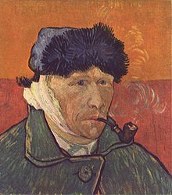

Vincent Van Gogh
Esta página se basa en Vincent Van Gogh, un pintor neerlandés y uno de los principales exponentes del postimpresionismo.
Pintó unos 900 cuadros y realizó más de 1600 dibujos. Una figura central en su vida fue su hermano menor Theo, marchante de arte en París, quien le prestó apoyo financiero de manera continua y desinteresada.

Desde joven tuvo inclinación hacia el dibujo. Su primer trabajo fue en una galería de arte. Más tarde se convirtió en pastor protestante y en 1879, a la edad de veintiséis años, se marchó como misionero a una región minera de Bélgica, donde comenzó a dibujar a la gente de la comunidad local.
Biografía
En 1885 pintó su primera gran obra, Los comedores de patatas. En ese momento su paleta se componía principalmente de tonos sombríos y terrosos. La luz y la preferencia por los colores vivos por la que es conocido surgió posteriormente, cuando se trasladó al sur de Francia, consiguiendo su plenitud durante su estancia en Arlés en 1888.
La calidad de su obra fue reconocida solo después de su muerte, en una exposición retrospectiva en 1890, considerándose en la actualidad uno de los grandes maestros de la historia de la pintura. Influyó grandemente en el arte del siglo xx, especialmente entre los expresionistas alemanes y los fauvistas como Matisse, Derain, Vlaminck y Kees Van Dongen.

Falleció a los treinta y siete años de edad por una herida de bala; aún no se sabe con seguridad si fue un suicidio o un homicidio involuntario.
A pesar de que existe una tendencia general a especular que su enfermedad mental influyese en su pintura, el crítico de arte Robert Hughes cree que las obras del artista están ejecutadas bajo un completo control; de hecho, el pintor jamás trabajó en los periodos en los que estaba enfermo.
Nació el 30 de marzo de 1853. Hijo de un austero y humilde pastor protestante neerlandés llamado Theodorus y de su mujer Anna Cornelia, Vincent recibió el mismo nombre que le habían puesto a un hermano que nació muerto exactamente un año antes. El 1 de mayo de 1857 nació su hermano Theo y ambos tuvieron cuatro hermanos más: Cornelius Vincent, Elisabetha Huberta, Anna Cornelia y Wilhelmina Jacoba.
Establecido en 1880 en Bruselas hizo amistad con el pintor neerlandés Anthon van Rappard. Se inscribió en la Academia de Bellas Artes donde estudió dibujo y perspectiva. En esta época realizó esbozos y dibujos basados en las pinturas de Jean-François Millet, representando campesinos y mineros, modelos de la vida cotidiana, y pintándolos muy realistas y con tonalidades oscuras.
Pintura: Aprendizaje
El 12 de abril de 1881 Vincent llegó a Etten a visitar a su hermano. Durante este período va a casa de su primo, el pintor Anton Mauve, y donde vuelve a enamorarse, esta vez de una de sus primas Cornelia Adriana Vos-Stricker (Kee), que acababa de enviudar, a la que propuso rápidamente matrimonio, la respuesta de Kee fue: «No, jamás, jamás».
En La Haya, su primo Antón, pintor de acuarelas, le aconsejó e insistió en la importancia de que aprendiese perspectiva y dibujo. Vincent hizo entonces sus primeras acuarelas y naturalezas muertas, utilizando tonos apagados, como se ve en las acuarelas: Los pobres y el dinero (1882) y Naturaleza muerta con col y zuecos (1881).

Mientras, su vida amorosa tomó un nuevo rumbo. Desesperado tras el rechazo de su prima Kee, o quizá por compasión, Vincent recogió de la calle a Clasina María Hoornik (Sien), una prostituta alcohólica, embarazada y con una hija, con la que vivió durante un año; tanto la madre como la hija le sirvieron de modelo.
En el dibujo Dolor, en el margen inferior, citó las palabras de Jules Michelet del tratado La Femme (1860): «¿Cómo es que hay en la tierra una sola mujer?» Sien, por la falta de recursos económicos, había vuelto a ejercer la prostitución y esto, unido a la gran presión que padecía Van Gogh por parte de su padre, de su hermano Theo y su primo Mauve (con quien llegaría a discutir y romper su amistad), hizo que este intento de vida familiar también fracasara.
Concluida esta relación con Sien, se trasladó a Drente, al norte de los Países Bajos, donde permaneció durante tres meses y pintó temas paisajistas en pintura al óleo, en los que se puede apreciar la diferencia con los dibujos realizados anteriormente. Como quería plasmar todos los detalles, realizó los óleos con trazos gruesos y pinceladas espesas.
Retrato Joseph Roulin
Retrato de 65 x 54 centímetros realizado en 1889 a este cartero. Actualmente se encuentra en el Museum Boijmans Van Beuningen de Rotterdam, Holanda.
La habitación
Mientras vivía en Arles, en 1888 a Van Gogh se le ocurrió pintar el lugar donde residía. Primero envió a su hermano Theo un boceto de la obra en la que estaba trabajando y después hizo lo mismo con su amigo Paul Gauguin. Incluso en una de sus cartas explicaba la importancia del color en esta nueva obra. De hecho, tras salir del hospital en 1889 escribió sobre esta obra: “cuando vi mis lienzos de nuevo después de mi enfermedad, el que me pareció mejor fue La habitación”.


Exposiciones en Vida
La primera exposición de la obra de Van Gogh fue en París en 1889, en el Salón de los Independientes, organizada más tarde (entre mayo y octubre) que en otros años, para que pudiera coincidir con la Exposición Universal de aquel mismo año. La elección de obras las hacían los mismos artistas pero los nuevos socios sólo podían presentar dos, y Van Gogh indicó a su hermano las dos pinturas que quería enviar: La noche estrellada (1888) e Iris (1889).

Autoretrato con oreja vendada (1889).
Trigal de Cuervos

Obras famosas
He aquí un par de sus obras entre las más famosas. Entre ellas Terraza de Cafe por la Noche y Trigal de Cuervos.